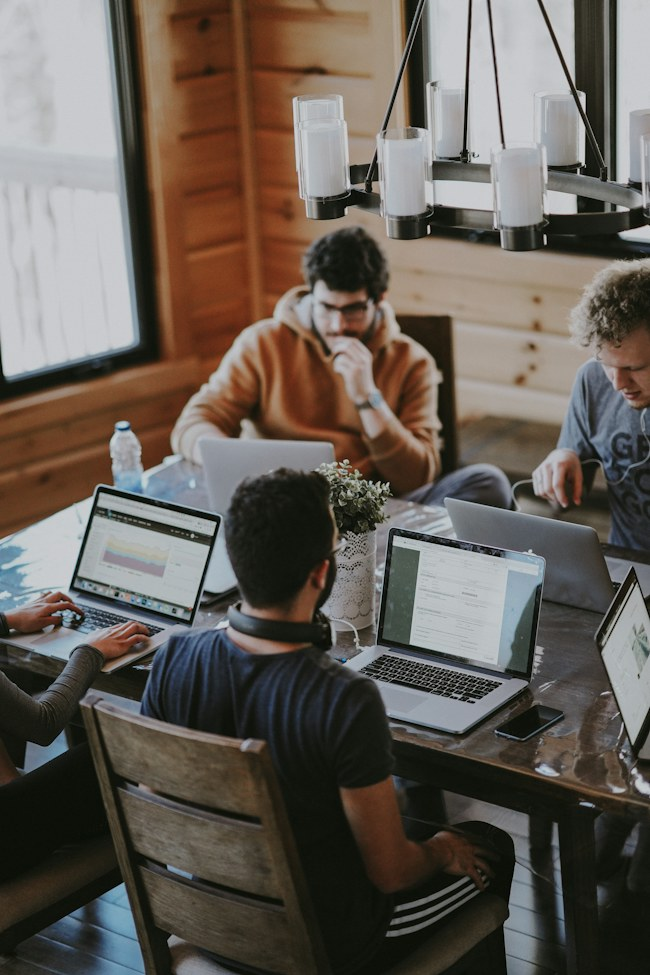
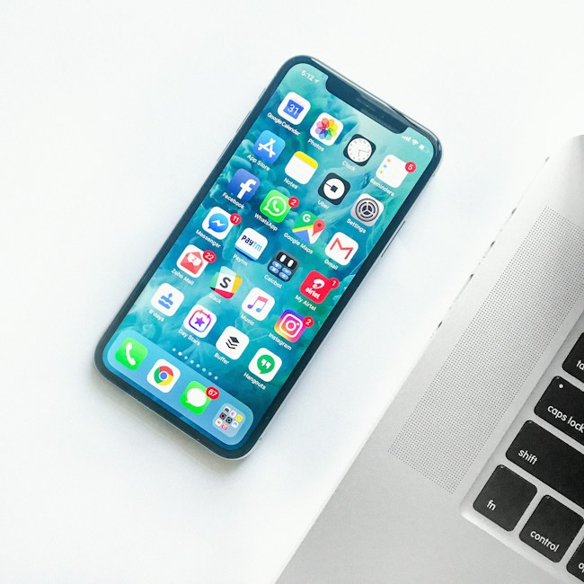
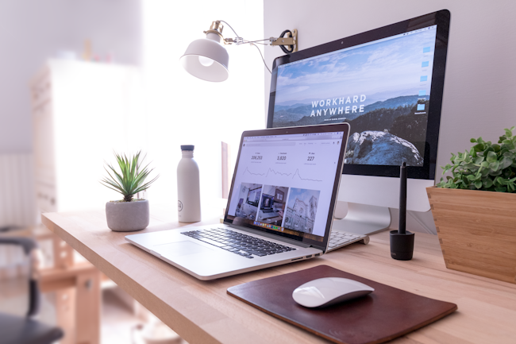
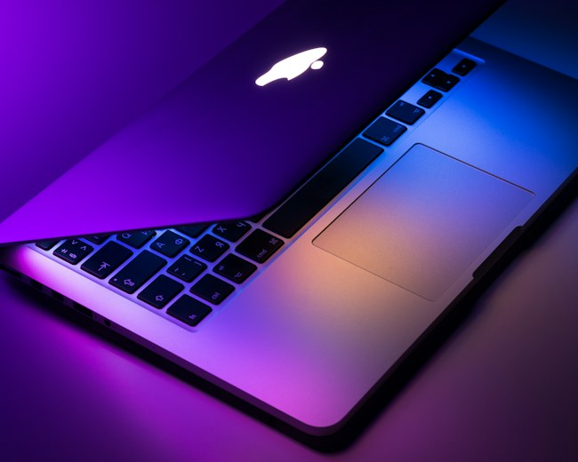

Дизайн інтерфейсів
Компоненти й сценарії для внутрішнього сервісу.
Портфоліо дизайнерки
Розробляю айдентику й цифрові інтерфейси для невеликих команд.
Переглянути роботи
Визначаю основні сценарії, створюю прототип і перевіряю, чи легко ним користуватися. Для готового інтерфейсу збираю узгоджений набір компонентів.
Компоненти й сценарії для внутрішнього сервісу.
Адаптивний каталог для локальної студії.
Серія ілюстрацій для інформаційних матеріалів.
Типографіка й візуальна система для події.

Під час роботи над дизайном спершу узгоджую, що людина має зробити на сторінці. Потім перевіряю цей сценарій на прототипі.
Дослідження потреб та перевірка прототипів.
Композиція, шрифт і візуальна комунікація.


